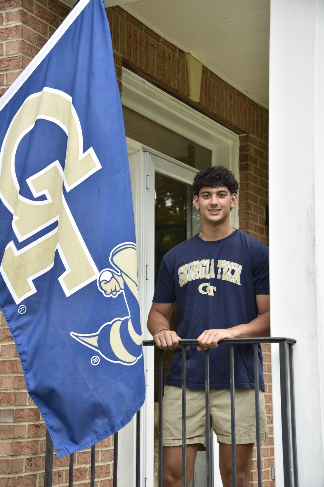

ABOUT ME
Engineer. Builder. Teammate.

Hi, I’m Zane.
I’m a computer engineering student at Georgia Tech, pursuing a minor in Computing and Intelligence. I enjoy projects that connect software with the physical world, whether that means building a web application or designing hardware for an accelerator beamline.
I like understanding how a system works from start to finish. My projects have taken me through programming, modeling, fabrication, and testing, with plenty of problem-solving along the way.
Outside engineering, I play for Georgia Tech’s club ACHA Division II hockey team. I also bring a background in Science Olympiad leadership and STEM competition.
GEORGIA INSTITUTE OF TECHNOLOGY
B.S. Computer Engineering
Minor in Computing & Intelligence
Expected May 2028 · GPA 4.0/4.0